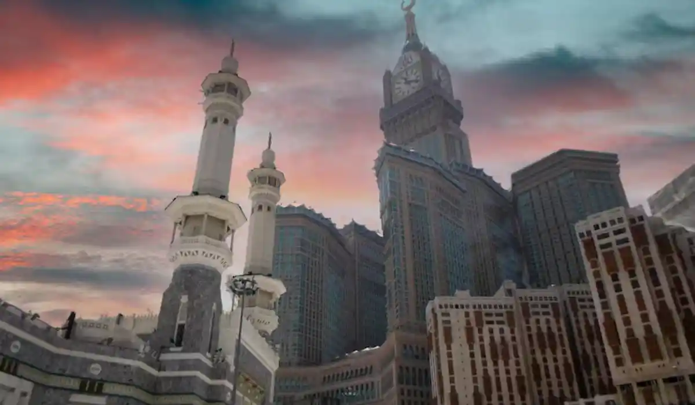

Lawyer and law firm in Mecca, Saudi Arabia, for all case types. Fast legal consultation.

Our team serves every district and area of Mecca without exception, with the same response speed and service standard.
Our team in Mecca provides licensed legal advice and representation to residents and workers in the holy city, with particular sensitivity to its religious character and the real estate and endowment (waqf) matters tied to it.
Mecca is an exceptional city — its effective population multiplies during the Hajj and Umrah seasons as millions of visitors arrive each year. That seasonal pattern shapes the city's real estate market, where properties near the Grand Mosque command notably higher value, and hospitality and short-term housing businesses thrive, creating specialized legal needs unlike any other Saudi city.
Real estate and property law tops the consultation list in Mecca, particularly for properties near the Haram and units designated for seasonal rental during Hajj and Umrah. We also handle a number of real estate mortgage files tied to financing development projects near the Grand Mosque, alongside real estate developer disputes in larger housing projects on the city's outskirts.
Directly connected to this is the religious hospitality and tourism sector, where we support accommodation facilities and hotels in drafting contracts with Hajj and Umrah tour operators, in addition to handling inheritance and estate matters, which carry particular social and religious sensitivity in a city the size of Mecca.
Cases in Mecca are distributed across the General Court for personal status and civil matters and the Commercial Court for real estate and commercial disputes, tracked electronically via the Najiz platform. For certain real estate cases involving waqf-designated land, we help clients understand the correct path for coordinating with the relevant endowment authorities before any judicial action.
Recurring scenarios include a property owner in a dispute with a seasonal tenant over lease terms during the Hajj season, an accommodation facility needing a contract drafted with an Umrah tour operator that clearly defines responsibilities, or a family needing to settle an inheritance file involving a property near the Haram. In every case, we account for the city's particular character when giving advice.
Given the city's seasonal nature, we place particular importance on response speed during peak periods like Hajj season and Ramadan. It always starts on WhatsApp, with a quick assessment of your situation, then a clear plan that accounts for any time sensitivity tied to a particular season.
In most seasonal-lease disputes, a formal notice or quick consultation is enough to settle the disagreement before the season ends, given how little time is available to resolve this type of dispute. In inheritance cases involving property with a clear title deed, we may need full representation before the competent court to ensure a fair, legally compliant division.
Other recurring scenarios: a property owner wanting to renew a long-term lease with a hotel facility and needing terms drafted that protect their rights at the end of the term, a family facing a dispute over dividing an inherited property among several heirs, some residing outside the Kingdom, or a small accommodation facility needing to understand its contractual obligations to a tour operator before Hajj season. We help settle these files with the city's particular character in mind.
Signs that call for immediate contact: a seasonal lease nearing its end without a clear renewal agreement, a dispute among heirs over an undivided property, or receiving a claim from a tenant or owner about the condition of a property. Addressing these situations before the next season begins saves significant time and effort.
Given the religious and economic ties between the two holy cities, we regularly handle files for clients moving between Mecca and Medina, and we also serve nearby Jeddah, the main gateway for pilgrims heading to Mecca via its airport and seaport.
We handle Mecca with the care its religious and social character requires, particularly in real estate and inheritance matters, while maintaining the same standards of speed and clarity our clients get across the rest of our network.
Describe your situation over WhatsApp and we'll route you directly to the right practice area, whether that's real estate & construction, private client & estates, or another department across our network.
For real estate cases, it helps to have the title deed or the seasonal lease contract in dispute. For inheritance cases, having the heirship deed if one has already been issued helps, or at least basic information about family members and the property in the estate. No documents are needed at the initial consultation stage — describing the situation is enough, and we point you toward the official documents your specific case path requires afterward.
Given how time-sensitive seasonal cases are, we give particular priority to assessing files quickly in Mecca, especially those close to a season's end. Inheritance cases usually depend on the number of heirs and how much they agree in principle, and we give you a realistic estimate of that timeline as soon as we review your situation's details.
Many heirs in Mecca inheritance cases actually live in other cities like Riyadh or Jeddah, or even outside the Kingdom. Our unified network means you can start the consultation from anywhere, while our Mecca team handles the local, on-the-ground aspects of the file, without requiring your personal travel unless strictly necessary for a hearing.
We understand that many Mecca disputes carry a sensitive family or religious dimension, particularly in inheritance cases and inherited property. We commit to handling every file calmly and clearly, and we always encourage seeking an amicable resolution between parties before judicial escalation where possible, while being fully prepared for firm legal representation if that's not achievable.
Our team in Mecca covers every neighborhood and area without exception, including Al Aziziyah, Al Shubaika, Ajyad, Al Naseem, and Al Awali near the Grand Mosque, with the same response speed and service standard regardless of where you are in the city.
Yes, we regularly handle seasonal lease disputes and the rights of owners and tenants during peak seasons, including disputes involving tour operators.
We help clients understand the correct path for coordinating with the relevant endowment authorities before taking any legal action involving this type of land.
We make a particular effort to maintain our usual response speed even during peak seasons, with only slight delays possible during extreme congestion.
Yes, we regularly handle inheritance files involving heirs residing outside Saudi Arabia, with full coordination over WhatsApp and the necessary official documents.
The initial consultation is always free regardless of the property's location or value; the cost of full representation is set transparently after reviewing your file's details.
Yes, we regularly work with clients residing outside Saudi Arabia who have properties or inheritance files in Mecca, with all contact handled through WhatsApp and official documents.
Reach a licensed lawyer within minutes on WhatsApp — in any city in the Kingdom.
Start your consultation